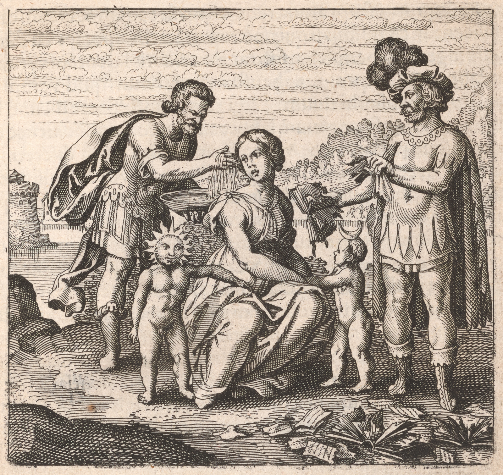

053
Embleme Emblem 11. Of the Secrets of Nature.
Whiten Latona and tear your books.
Emblema XI. De secretis Naturae.
Dealbate Latonam & rumpite libros.
FUGA XI. in 6. supra.
Machet weiß die Latonam / und zerreisset
die Bücher.

Epigramme Epigram 11.
Ancestors (of truth noe no doubt) to us relate
Latona's twinns twins producd produced from Jove the great.
Some say Shee's She's Sol with fair Diana mixt mixed,
Having a face most white, some blacke black betwixt:
Study my dear! to wash these spots away,
Then burne burn those books which led your thoughts astray.
Epigramma XI.
Latonæae sobolem non novit nemo gemellam,
(Ceu fert fama vetus) quæae Jove nata fuit.
Hanc alii tradunt cum luna lumina solis
Mixta, nigræae cui sint in facie maculæae.
Latonam ergo pares albescere, damnáque dantes
Ambiguos, adsit nec mora, rumpe libros.
XI. Epigrammatis Latini versio Germanica.
Ein jeder kennet der Latonæae Zwilling Geschlecht wol/
(Wie dae Gerücht zeugt) welchs von Jove gebohren senn sol/
Diß andre nennnen Sonn und Mohn verknüpffe aller massen
Darin schwarzer Flecken sich viele spüren laffen/
Drumb mache Latonam von Farben am Gesich gar weiß/
Und daß dir nicht schaden die Bücher / in Stücken reiß
054
e11-01Soe So great is the diversity of Authors in writing, that the explorators of
truth doe do allmost almost despaire despair of finding the end of art: e11-02for Allegoricall Allegorical speeches
being of themselves difficult to be understood, and the causes of many errors,
especially then, if the same words be applyd applied to different things, and diffe=
rent words to the same things: e11-03out of which if a man would extricate him=
selfe himself, hee he must either be of a divine genius, to perceive the truth invol=
ved in soe so great darkenesse darkness, or of endlesse endless pains and charge in proving what
is true, what not: e11-04But the Philosophers say one is not sufficient without the
other, an acute genius without hand=labour hand=labor, or this without that, as neither
the theory without the practice, and contrarywise: e11-05for noe no man is of soe so
discreet an understanding as to avoyd avoid a hundred thousand circumvagations,
errors, falsityes falsities as to the word, digressions, and ambiguityes ambiguities, and persist in the
true path of nature: wherefore say the Philosophers, hee he that hath has not as
yet erred, hath has not yet begun, and that errors are the informers of those
things which ought to be done or not. e11-06Soe So the same doe do inculcate, that a
man may spend his whole life, though hee he Should live a thousand years, in
distilling and redistilling, before hee he can attaine attain to truth by experimentation
alone: e11-07That little benefit can be had without study and reading of au=
thors, the Corrector of fools signifyes signifies, saying: Study removeth removes ignorance,
and reduceth reduces a mans genius to true understanding, and the knowledge of
every thing: It is therefore principally necessary to acquire the knowledge of
this delectable worke work by study, and to sharpen the witt wit by Philosophicall Philosophical
sayings, the knowledge of truth being centred centered in them: e11-08If therefore opera=
tors despise not study, they will sweetly relish the fruit from thence pro=
ceding proceeding: e11-09but they that abhorre abhor study, and yet are willing to operate, let them
see whether that art be the imitation of nature herselfe herself, which the art of
her desires to amend: because it is impossible for it to præpare prepare the Philoso=
phers secrets to a perfect end: e11-10Of these men say the Sophi, that they runne run to
practice as an asse ass to hay, not knowing what to lay his nose to, onely only soe so far
as the outward senses doe do without understanding lead him to food by sight
and tast taste: these are his words. e11-11But lest a man should macerate himselfe himself with
overmuch study, which is an inexhaustible sea and of immense profundity
and endeavour endeavor
Discourse 11.
e11-01Soe So great is the diversity of Authors in writing, that the explorators of
truth doe do allmost almost despaire despair of finding the end of art: e11-02for Allegoricall Allegorical speeches
being of themselves difficult to be understood, and the causes of many errors,
especially then, if the same words be applyd applied to different things, and diffe=
rent words to the same things: e11-03out of which if a man would extricate him=
selfe himself, hee he must either be of a divine genius, to perceive the truth invol=
ved in soe so great darkenesse darkness, or of endlesse endless pains and charge in proving what
is true, what not: e11-04But the Philosophers say one is not sufficient without the
other, an acute genius without hand=labour hand=labor, or this without that, as neither
the theory without the practice, and contrarywise: e11-05for noe no man is of soe so
discreet an understanding as to avoyd avoid a hundred thousand circumvagations,
errors, falsityes falsities as to the word, digressions, and ambiguityes ambiguities, and persist in the
true path of nature: wherefore say the Philosophers, hee he that hath has not as
yet erred, hath has not yet begun, and that errors are the informers of those
things which ought to be done or not. e11-06Soe So the same doe do inculcate, that a
man may spend his whole life, though hee he Should live a thousand years, in
distilling and redistilling, before hee he can attaine attain to truth by experimentation
alone: e11-07That little benefit can be had without study and reading of au=
thors, the Corrector of fools signifyes signifies, saying: Study removeth removes ignorance,
and reduceth reduces a mans genius to true understanding, and the knowledge of
every thing: It is therefore principally necessary to acquire the knowledge of
this delectable worke work by study, and to sharpen the witt wit by Philosophicall Philosophical
sayings, the knowledge of truth being centred centered in them: e11-08If therefore opera=
tors despise not study, they will sweetly relish the fruit from thence pro=
ceding proceeding: e11-09but they that abhorre abhor study, and yet are willing to operate, let them
see whether that art be the imitation of nature herselfe herself, which the art of
her desires to amend: because it is impossible for it to præpare prepare the Philoso=
phers secrets to a perfect end: e11-10Of these men say the Sophi, that they runne run to
practice as an asse ass to hay, not knowing what to lay his nose to, onely only soe so far
as the outward senses doe do without understanding lead him to food by sight
and tast taste: these are his words. e11-11But lest a man should macerate himselfe himself with
overmuch study, which is an inexhaustible sea and of immense profundity
and endeavour endeavor
055(though in vaine vain) to bring every letter, agreeing allso also with ma=
ny other things, into act, in the meane mean time consuming or diminishing his
strength, time, reputation, wealth and riches, the Philosophers doe do use this
Emblematicall Emblematical speech, that Latona must be whitened, and those books
torne torn, lest their hearts be broken, for there are many books soe so obscurely
written, as to be understood by their owne own Authors onely only: e11-12not a few left out*
of envy to seduce others, or rather to retard them, that they may not attaine attain
to their end without difficulty, or to obscure those things written before by
themselves: e11-13But what is the meaning of whitening Latona? this is the
worke work this the labour labor to inquire: Clangor buccinæ affirms Latona to be an 40Discourse 11.
imperfect body compounded of Sol and Luna. e11-14The most ancient Poets and
writers affirme affirm Latona to be the mother of Sol and Luna, or Apollo and
Diana, others the Nurce Nurse; and that Diana was first borne born (for Luna and
whitenesse whiteness first appears) and did then performe perform the office of a midwife
the same day in bringing forth her brother Apollo. e11-15Latona was indeed one *
of the twelve divine Hieroglyphicks Hieroglyphics of the Ægyptians Egyptians, by whome whom these
and other Allegoryes Allegories were propagated amongst other nations, very few of
the Ægyptians Egyptians Preists Priests, and those onely only understanding the true meaning
and sense of them, all the rest referring them to other subjects, which were
not in the nature of things, namely various Gods, Goddesses, and the like:
e11-16Hereupon Latona had there the most sumptuous temple next to Vulcan, cove=
red and adorned with gold, as Shee She that was the Mother of the Philosophicall Philosophical
Apollo and Diana: e11-17but this Latona is browne brown and blackish, and hath has many
moles and blemishes in her face, which must be taken away by art, namely
by dealbation: e11-18Some doe do make dealbations of Ceruse, Mercury Sublimate,
Talke Talc, reduced into oyle oil, and the like, with which they incrust, cover, and
soe so whiten the outside of the Skinne Skin; but these whitening incrustations
fall of off with every wind or liquor, because they doe do not penetrate to the more
inward parts: e11-19But the Philosophers care not for such colorations, which are
usd used more to deceive the eyes, than to tinge the internall internal substance of the
body: For they would have the face of Latona whitened thoroughly, and
the Skinne Skin itselfe itself altered, that is, truely truly, and not superficially: e11-20a Quæstion Question
might be asked how it can be? I answer, Latona must be first sought out
and knowne known, which though Shee She be taken out of a vile place, must not=
withstanding be sublimed to a more worthy, but if Shee She be taken out
of a more worthy place, Shee She must be throwne thrown into a place more vile,
namely into dung: for there will Shee She become truely white, and be
made white lead, which being had, there is noe no need to doubt of suc=
cesse success, or red lead, which is the begining beginning and end of the worke work . . .
ny other things, into act, in the meane mean time consuming or diminishing his
strength, time, reputation, wealth and riches, the Philosophers doe do use this
Emblematicall Emblematical speech, that Latona must be whitened, and those books
torne torn, lest their hearts be broken, for there are many books soe so obscurely
written, as to be understood by their owne own Authors onely only: e11-12not a few left out*
*!!
of envy to seduce others, or rather to retard them, that they may not attaine attain
to their end without difficulty, or to obscure those things written before by
themselves: e11-13But what is the meaning of whitening Latona? this is the
worke work this the labour labor to inquire: Clangor buccinæ affirms Latona to be an 40Discourse 11.
imperfect body compounded of Sol and Luna. e11-14The most ancient Poets and
writers affirme affirm Latona to be the mother of Sol and Luna, or Apollo and
Diana, others the Nurce Nurse; and that Diana was first borne born (for Luna and
whitenesse whiteness first appears) and did then performe perform the office of a midwife
the same day in bringing forth her brother Apollo. e11-15Latona was indeed one *
*!
of the twelve divine Hieroglyphicks Hieroglyphics of the Ægyptians Egyptians, by whome whom these
and other Allegoryes Allegories were propagated amongst other nations, very few of
the Ægyptians Egyptians Preists Priests, and those onely only understanding the true meaning
and sense of them, all the rest referring them to other subjects, which were
not in the nature of things, namely various Gods, Goddesses, and the like:
e11-16Hereupon Latona had there the most sumptuous temple next to Vulcan, cove=
red and adorned with gold, as Shee She that was the Mother of the Philosophicall Philosophical
Apollo and Diana: e11-17but this Latona is browne brown and blackish, and hath has many
moles and blemishes in her face, which must be taken away by art, namely
by dealbation: e11-18Some doe do make dealbations of Ceruse, Mercury Sublimate,
Talke Talc, reduced into oyle oil, and the like, with which they incrust, cover, and
soe so whiten the outside of the Skinne Skin; but these whitening incrustations
fall of off with every wind or liquor, because they doe do not penetrate to the more
inward parts: e11-19But the Philosophers care not for such colorations, which are
usd used more to deceive the eyes, than to tinge the internall internal substance of the
body: For they would have the face of Latona whitened thoroughly, and
the Skinne Skin itselfe itself altered, that is, truely truly, and not superficially: e11-20a Quæstion Question
might be asked how it can be? I answer, Latona must be first sought out
and knowne known, which though Shee She be taken out of a vile place, must not=
withstanding be sublimed to a more worthy, but if Shee She be taken out
of a more worthy place, Shee She must be throwne thrown into a place more vile,
namely into dung: for there will Shee She become truely white, and be
made white lead, which being had, there is noe no need to doubt of suc=
cesse success, or red lead, which is the begining beginning and end of the worke work . . .
DISCURSUS XI.
e11-01 Tanta est authorum in scribendo diversitas, ut ferè inquisitores
veritatis de artis fine inveniendo desperent. e11-02 Cùm enim per se
allegorici sermones sint captu difficiles & multorum errorum cau-
sæae, tum inprimis, si vocabula rebus diversis eadem & iisdem diversa
applicentur. e11-03 Ex quibus si quis se extricare velit, oportet eũeum aut divi-
ni esse ingenii, ut perspiciat sub tantis tenebris latentem veritatem,
aut laboris & sumptus in exhausti, ut experiatur, quid verum, quid
non sit. e11-04 At philosophi unum absque alio non sufficere dicunt, inge-
nium acutum absq;absque manuum labore, aut hunc absq;absque illo, ut nec theo-
riam absque praxi & vice versa. e11-05 Nemo enim adeò discreti intel-
lectus est, ut centies mille ambages, errores, ad vocem falsitates, di-
verticula & ambiguitates declinet & in vera Naturæae semita persi-
stat: Unde dicunt Philos.Philosophi Qui nondum erravit, nondum incepit, &
errores essse magistros eorum quæae fieri debeant aut non. e11-06 Ita iidem
inculcant, quod quis totam vitam distillando & redistillando
consumere possit, etiamsi mille annos viveret, antequam per solam
Experimentationem ad veritatem perveniret. e11-07 Quod absque studio
& lectione authorum parum proficiatur, Corrector fatuorũfatuorum innuit,
cùm dicit: Studium amovet ignorãtiamignorantiam & reducit humanum inge-
nium ad veram cognitionem & ad cujuslibet rei scientiam Ergo in-
primis est necessarium per studium hujus suavis operis scientiam
acquirere & per physica dicta ingenium acuere, cùm in ipsis fit co-
gnitio veritatis. e11-08 Si ergo laborantes studium nõnon despexerint, fructum
inde pervenientẽpervenientem dulciter degustabunt. e11-09 Qui autem studere abhor-
ruerint & tamen laborare voluerint, videant, an ars ipsius naturæae
fit imitatio, quam ars ipsius emendare cupit. Quoniam impossibile
est ei secreta Philosophorum ad perfectum finem præaeparare. e11-10 De
his sapientes dicunt, quod ii transeant ad practicam sicut asinus ad
fœoenum, nescientes ad quid rostrum porrigant, nisi in quantum sen-
sus exteriores sine intellectu per visum & gustum ad pabulum ad-
ducit. Hæaec ille. e11-11 Verùm ne quis nimio studio, quod mare est inex-
haustum & immensæae profunditatis, se maceret, omnémque lite-
ram, etiam cum multis aliis concordantem, in actum ducere cone
DISCURSUS XI.
tur (licet frustra) vires, corporis æaetatem, famam, opes & facultates
interim absumendo aut diminuendo, Philosophi Emblematico
hoc utuntur sermone, quod Latona dealbãdadealbanda sit, & libri illi rum-
pendi, ne corda eorum rumpantur: sunt enim plerique libri adeò
obscurè scripti, ut à solis authoribus suis percipiantur. e11-12 Non pauci ad
se ducendum alios ex invidia relicti, aut potius ad remorandum in
cursu, ne absque difficultate metãmetam attingant, aut ad obscurationem
à se ante scriptorum. e11-13 Quid autem fit, LatonãLatonam dealbare, hoc opus hic
labor est, inquirere. Latonam esse ex sole & luna compositum corpus imper-
fectum Clangor buccinæae asserit. e11-14 Poëtæae & antiquissimi scriptores,
LatonãLatonam solis & Lunæae seu Apollinis & Dianæae matrem statuunt, Alli
nutricem. Priùs autem DianãDianam editam (Luna enim & albedo primò
apparet) quæae deinde obstetricis munere functa sit eâdẽeadem die in eden-
do | suo fratre Apolline. e11-15 Est autem Latona una ex 12. diis Hierogly-
phicis AegyptiorũAegyptiorum, à quib.quibus hęchaec aliaeq;aliaeque allegorięallegoriae ad reliquas gẽtesgentes pro-
pagatæae sũtsunt, solis paucissimis sacerdotib.sacerdotibus ÆAegyptiis harũharum verãveram mẽtẽmentem &
sententiam intelligentibus, cæaeteris omnibus ad alia subjecta, quæae
in rerum natura non essent, nẽpenempe varios Deos Deásque, ejusmodi
interpretantibinterpretantibus. e11-16 Hinc post Vulcanum Latona ibidem habuit tem-
plum sumptuosissimũsumptuosissimum, auro tectum & exornatũexornatum, quippe quæae Apol-
linis Philos.Philosophi & Dianæae mater fuerit. e11-17 Est autem hæaec Latona fusca &
subnigra, multósq;multosque næaevos habet in facie, qui artificio tollendi sunt
nempe per dealbationem. e11-18 Quidam ex cerusa, mrecurio sublimato,
talco in oleũoleum redacto & similib.similibus dealbationes faciunt, quibus exter-
nam cutim incrustant, tegunt & sic dealbant. At hæae incrustationes
dealbativæae quolibet flatu aut liquore decidunt: quia non penetrant
ad interiora. e11-19 Sed Philos.Philosophi de talibus non curant coloritiis, quæae ma-
gis ad fallẽdumfallendum oculos, quàm tingẽdũtingendum substantiãsubstantiam corporis interiorẽinteriorem
adhibentur. Volunt enim, ut Latonæae facies dealbetur penetrativè
& ipsa cutis alteretur, hoc est, verè & nõnon fucosè. e11-20 Quæaeri autem posset
quomodo contingat? Respondeo, Latona primò inquirenda & a-
gnoscenda est, quæae etiãsietiamsi ex vili loco extrahatur, tamen sublimãdasublimanda
est in digniorẽdigniorem, si verò ex digniori, in viliorẽviliorem submergẽdasubmergenda, nẽpenempe in fi-
mũfi-
mum: Ibi n.enim albescet reverà & fiet plũbũplumbum albũalbum, quo habito, nõnon est, ꝙquod du-
bitetur de successu, seu plũoplumo rubeo, ꝙquod est opis initiũinitium & finis.